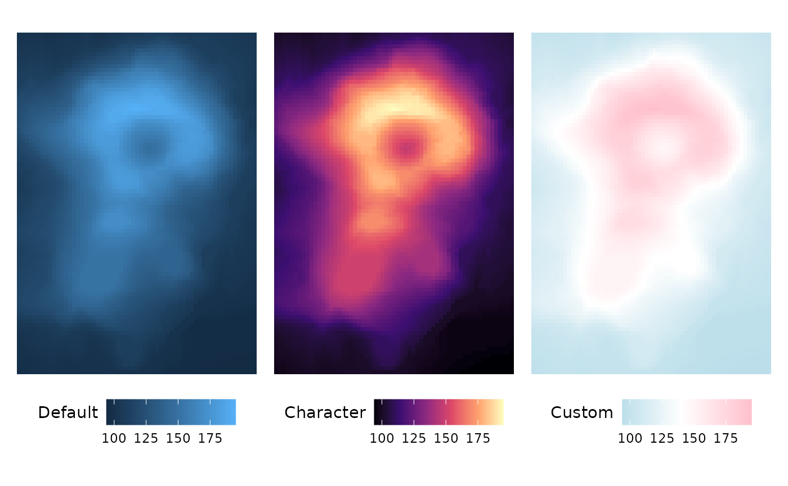
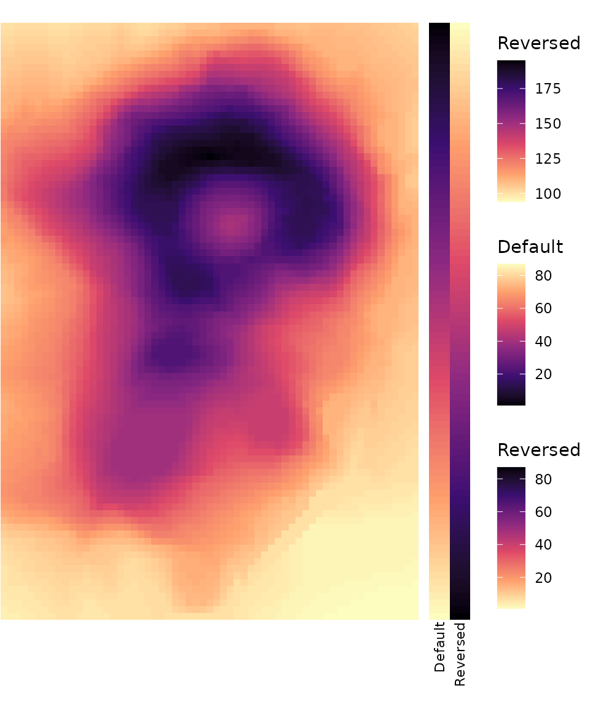
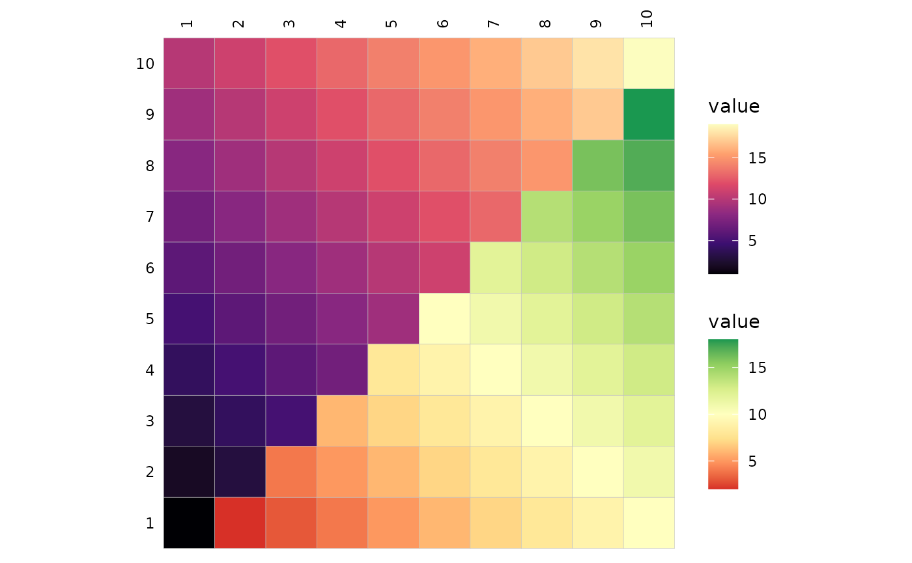
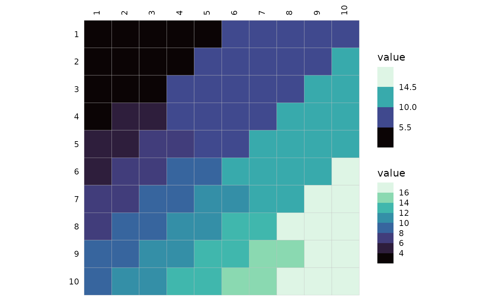
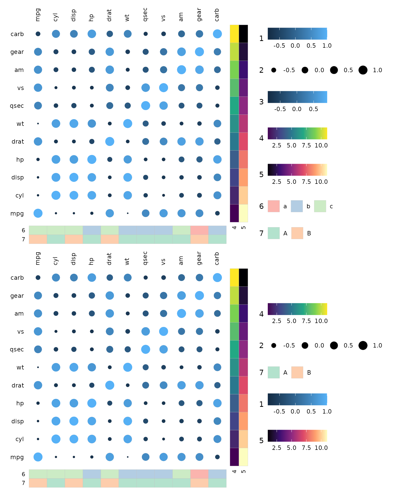
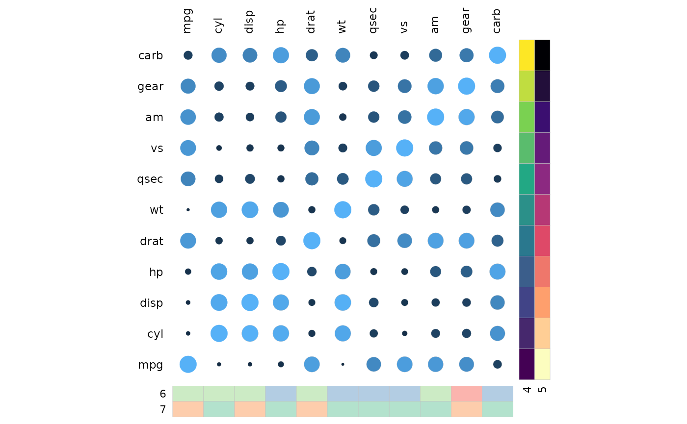
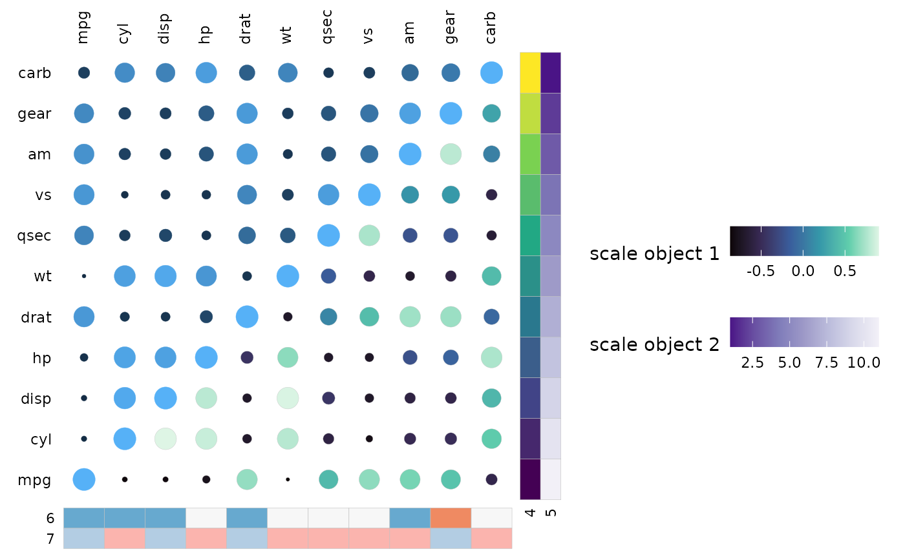
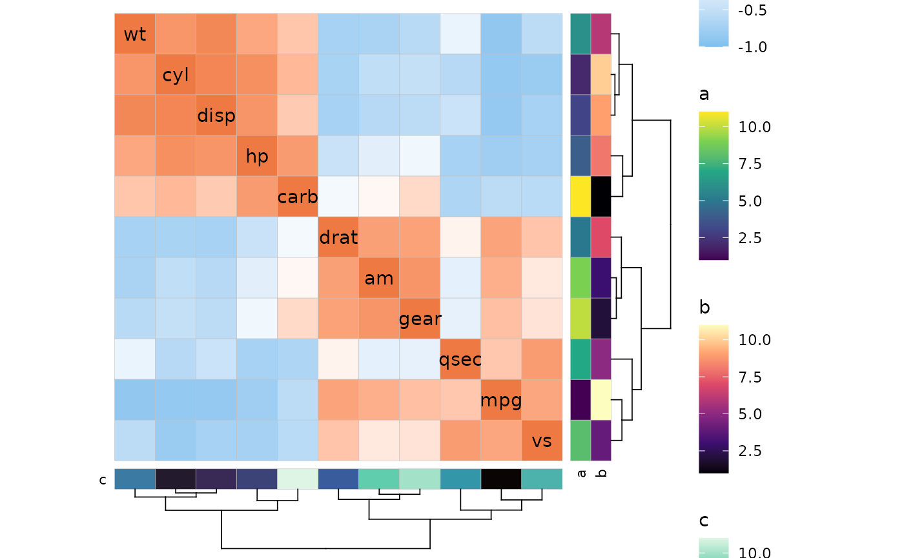
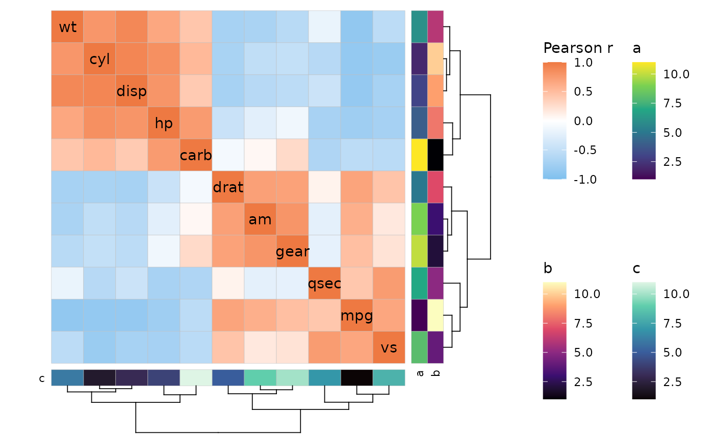
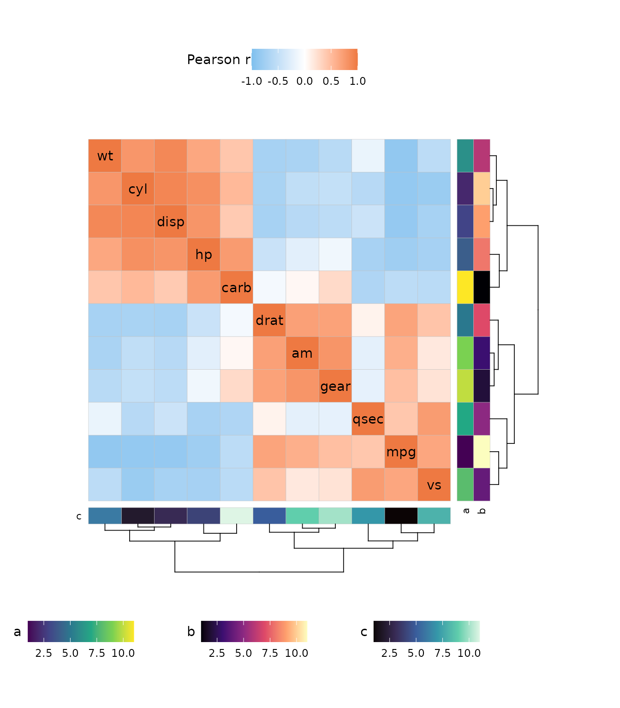

library(ggcorrheatmap)
library(ggplot2)
library(patchwork) # Arrange plots and legends
library(cowplot) # For extracting and arranging legendsScales
As explained in some of the other articles, the colour scale argument
col_scale takes NULL (for default scales), a character (for
Brewer and Viridis scales) and ggplot2 scale objects. When
passing scale objects, make sure the correct aesthetic is used (fill or
colour/color depending on plotting mode).
plt1 <- gghm(volcano, col_name = "Default",
border_col = NA, show_names_x = FALSE, show_names_y = FALSE)
plt2 <- gghm(volcano,
# Brewer Spectral palette
col_scale = "A", col_name = "Character",
border_col = NA, show_names_x = FALSE, show_names_y = FALSE)
plt3 <- gghm(volcano,
# Custom scale
col_scale = scale_fill_gradient2(
high = "pink", mid = "white", low = "lightblue",
midpoint = 140, name = "Custom"
),
border_col = NA, show_names_x = FALSE, show_names_y = FALSE)
plt1 + plt2 + plt3 &
theme(legend.position = "bottom",
legend.title = element_text(vjust = 0.8))
This is also true for the annotation scale arguments
annot_rows_col and annot_cols_col.
row_annot <- data.frame(.names = rownames(mtcars)[1:10],
Default = 1:10,
Character = 1:10,
Custom = 1:10)
row_annot_fill <- list(Default = NULL,
Character = "Spectral",
Custom = scale_fill_gradient2(
high = "pink", mid = "white", low = "lightblue",
midpoint = 6
))
gghm(mtcars[1:10, 1:5],
annot_rows_df = row_annot,
annot_rows_col = row_annot_fill,
# Make annotation larger and hide heatmap legend
annot_size = 1,
legend_order = c(NA, 1:3)) +
theme(plot.margin = margin(0, 0, 30, 0))
When col_scale is a character, “rev_” or “_rev” can be
added to the beginning or end, respectively, to reverse the scale. This
also works for annotation scales.
row_annot <- data.frame("Default" = 1:nrow(volcano),
"Reversed" = 1:nrow(volcano))
row_annot_colr <- list("Default" = "A", "Reversed" = "A_rev")
gghm(volcano, show_names_x = FALSE, show_names_y = FALSE, border_col = NA,
col_scale = "rev_A", col_name = "Reversed",
annot_rows_df = row_annot,
annot_rows_col = row_annot_colr,
# Make the annotation larger for visibility
annot_size = 3, annot_dist = 1.5) +
# Change the margins a bit too
theme(plot.margin = margin(0, 0, 40, 0))
The default scale for the main heatmap is different for
ggcorrhm() as it assumes that correlations are plotted.
There are also more arguments to modify the scale, such as the colours
or binning.
When the plot is using a mixed layout,
col_scale can also take a vector or list to apply different
scales to the different triangles.
plt_dat <- sapply(1:10, function(x) seq(x, x + 9))
gghm(plt_dat, layout = c("tl", "br"),
mode = c("hm", "hm"),
# For Viridis options, both the short and long versions work
col_scale = c("magma", "RdYlGn"))
col_scale can still be one value to apply the same scale
to both triangles. This does not work for scale objects, as the two
triangles may use different aesthetics (fill or colour). This means that
there will be two colour legends for the main heatmap if the two
triangles use different aesthetics, even if they use the same colours.
ggcorrhm() hides one of the legends by default and the legend order section goes into more
detail on how this can be done.
As also explained in the mixed
layout article, the scale-modifying arguments bins,
na_col, limits, and in ggcorrhm()
also high, mid, low,
midpoint, and size_range can be applied
triangle-wise. If only one scale is provided but a scale-modifying
argument is applied differently per triangle, two scales are created
anyway.
# Only one scale supplied, but it is split into two by
# specifying two different binnings
gghm(plt_dat, layout = c("tr", "bl"), mode = c("hm", "hm"),
col_scale = "G", bins = c(4L, 8L))
When using scale objects, arguments that change scales and legends
such as col_name or legend_order and, for
ggcorrhm(), high, mid,
low etc will be ignored to instead give the user full
control. This allows for more flexibility, such as changing the breaks,
bin sizes, or changing how out of bounds values are treated.
The default way ggplot2 deals with values outside of the
scale range (out of bound value) is to replace them with NAs. The
oob argument of the scale functions can change the
behaviour, e.g. so that OOB values use the extreme colours of the
scale.
# Normal limits
plt1 <- gghm(plt_dat, col_scale = "RdYlGn_rev",
cell_labels = TRUE)
# Narrower limits with handling of oob values
plt2 <- gghm(plt_dat, layout = c("tr", "bl"),
mode = c("hm", "hm"),
col_scale = list(
# scale_fill_distiller to use Brewer palettes with continuous data
# The default direction in distiller is -1, opposite of gghm
scale_fill_distiller(
palette = "RdYlGn",
# Values outside the limits are replaced with NAs
limits = c(7, 13),
# Can then change the colour using the na.value argument
# (corresponding to na_col in gghm)
na.value = "beige"
),
scale_fill_distiller(
palette = "RdYlGn",
limits = c(7, 13),
# Change oob strategy 'oob' argument
# scales::squish assigns the extreme colours to values outside the range
oob = scales::squish
)
), cell_labels = TRUE)
plt1 + plt2![Two figures of the gradient plot from before, now with low numbers in the top left and high numbers in the bottom right. The values are written in the cells with black text, showing that the gradient goes from 1 to 19. The first plot is simply coloured using the Brewer RdYlGn palette. The second plot uses the same palette, but the limits have been set to 7 and 13, narrowing the colour gradient that was visible in the first plot. Values outside the range are beige in the top right triangle, and green or red in the bottom left (corresponding to the lowest and highest ends of the scale).](legends_files/figure-html/unnamed-chunk-8-1.png)
When binning scales with the bins argument, a number of
the ‘double’ class will prioritise breaks at nice numbers while an
integer will prioritise the number of bins. As a side note, out-of-bound
values with binned scales also default to using the ‘squish’ strategy
shown above.
# Make plot data between -1 and 1 (like correlation data)
plt_dat_cor <- sapply(seq(-1, 0, length.out = 100), function(x) {
seq(x, x + 1, length.out = 100)
})
# Simple mixed layout with mixed scales
plt1 <- ggcorrhm(plt_dat_cor, cor_in = TRUE, show_names_diag = FALSE,
border_col = 0, layout = c("tl", "br"), mode = c("hm", "hm"),
col_scale = c("Spectral", "H"))
# With many scale arguments applied
plt2 <- ggcorrhm(plt_dat_cor, cor_in = TRUE, show_names_diag = FALSE,
border_col = 0, layout = c("tl", "br"), mode = c("hm", "hm"),
col_scale = c("Spectral", "H"),
# Provide a list as a mix of integer and float would be coerced if atomic vector
# Integer vs double, results in 11 and 10 bins
bins = list(11L, 11),
# NULL to use default limits (-1 to 1 in ggcorrhm)
limits = list(c(-.5, .5), NULL))
plt1 + plt2![Two 100x100 heatmaps with values from -1 to 1 in a gradient going from the bottom left to the top right. The heatmaps are using the Brewer Spectral colour scale in the top left triangle and the Viridis turbo scale in the bottom right. The first heatmap simply shows the gradient. The second heatmap has binned scales, with 11 bins in the top left triangle (with breaks at numbers with many decimals and limits at -0.5 and 0.5) and 10 bins in the bottom right triangle (evenly spaced at intervals of 0.2 going from -1 to 1).](legends_files/figure-html/unnamed-chunk-9-1.png)
By using scale objects, breaks in both continuous and binned scales can be put wherever desired.
plt_dat_cor <- sapply(seq(-1, 0, length.out = 10), function(x) {
seq(x, x + 1, length.out = 10)
})
plt1 <- ggcorrhm(plt_dat_cor, cor_in = TRUE)
plt2 <- ggcorrhm(plt_dat_cor, cor_in = TRUE,
layout = c("tr", "bl"),
mode = c("hm", "hm"),
col_scale = list(
scale_fill_gradient2(
# Mimic the default correlation scale
high = "sienna2", mid = "white", low = "skyblue2",
# If not binned this only changes the legend but not the colours
breaks = seq(-1, 1, length.out = 11)
),
# Binned scales can be made with e.g.
# scale_fill_fermenter, scale_fill_viridis_b, scale_fill_steps etc
scale_fill_steps2(
high = "sienna2", mid = "white", low = "skyblue2",
# Specify exact break points for bins
breaks = c(-1, -0.75, -0.25, 0, 0.25, 0.75, 1)
)
))
plt1 + plt2![The same kind of gradient heatmaps as shown in the previous plots, but the values now range from -1 (top left) to 1 (bottom right). A diverging colour scale going from blue to white to red is used for the cell colours. The first plot simply shows off the gradient, while the second uses two binned scales ranging between -0.7 to 0.7. The scale in the top right triangle has five bins with breaks at 0.42, 0.14, -0.42, and -0.14, while the bottom left triangle has four bins with breaks at 0.4, 0, and -0.4.](legends_files/figure-html/unnamed-chunk-10-1.png)
Size scales can be customised as well. ggcorrhm() uses
an absolute value transform for the default size scale and hides the
legend as it becomes inaccurate (as can be seen in the plot below).
scale_size_area can be passed to size_scale to
still scale with the absolute value and keep a meaningful legend, at the
cost of not being able to set the lower limit for the sizes.
ggcorrhm(mtcars, layout = c("tr", "bl"), mode = c(23, 23),
size_scale = list(
# Can make a binned size scale
scale_size_binned(n.breaks = 6, range = c(2, 6),
# Absolute value transform but legend loses meaning
transform = scales::trans_new("abs", abs, abs),
name = "scale_size_binned\n(absolute value)",
guide = guide_bins(order = 1)),
# scale_size_area, scale_size_binned_area also scale with absolute value
# but fewer options to control sizes
scale_size_area(max_size = 10, name = "scale_size_area")
), border_lwd = 1, legend_order = NA)Legend order
Legends have a set default order:
- Main heatmap colours.
- Main heatmap sizes.
- Row annotations in order.
- Column annotations in order.
row_annot <- data.frame(.names = rownames(mtcars)[1:10], 1:10)
colnames(row_annot)[2] <- "3"
col_annot <- data.frame(.names = colnames(mtcars), 11:1)
colnames(col_annot)[2] <- "4"
gghm(scale(mtcars)[1:10, ], mode = 23,
col_name = "1", size_name = "2",
annot_rows_df = row_annot,
annot_cols_df = col_annot) +
# Make the legends horizontal to fit better
theme(legend.direction = "horizontal")If the layout is mixed, the legends of the first triangle appear before those of the second triangle.
gghm(cor(mtcars), layout = c("tr", "bl"), mode = c("15", "hm"),
col_scale = c("H", "A"), col_name = c("Triangle 1", "Triangle 2"),
size_name = "Triangle 1") +
theme(legend.direction = "horizontal")The order can be changed by using the legend_order
argument. This argument takes a numeric vector, the first element
specifying the order for the first legend (of the default order), the
second element for the second legend and so on. If a value is
NA, that legend is hidden.
set.seed(123)
annot_rows <- data.frame(.names = colnames(mtcars), 1:11, 11:1)
colnames(annot_rows)[2:3] <- c("4", "5")
annot_cols <- data.frame(.names = colnames(mtcars),
sample(letters[1:3], 11, TRUE),
sample(LETTERS[1:2], 11, TRUE))
colnames(annot_cols)[2:3] <- c("6", "7")
plt1 <- gghm(cor(mtcars), layout = c("tl", "br"), mode = c(19, 21),
col_name = c("1", "3"), size_name = c("2"),
annot_rows_df = annot_rows,
annot_cols_df = annot_cols)
plt2 <- gghm(cor(mtcars), layout = c("tl", "br"), mode = c(19, 21),
col_name = c("1", "3"), size_name = c("2"),
annot_rows_df = annot_rows,
annot_cols_df = annot_cols,
legend_order = c(4, 2, NA, 1, 5, NA, 3))
plt1 / plt2 &
theme(legend.direction = "horizontal")
A single NA value hides all legends.
gghm(cor(mtcars), layout = c("tl", "br"), mode = c(19, 21),
col_name = c("1", "3"), size_name = c("2"),
annot_rows_df = annot_rows,
annot_cols_df = annot_cols,
legend_order = NA)
Scales can be specified as ggplot2 scale objects. In
this case the user has complete control over the scale and it is
unaffected by arguments like legend_order or
col_name.
gghm(cor(mtcars), layout = c("tl", "br"), mode = c(19, 21),
col_name = c("1", "3"), size_name = "2",
col_scale = list(
# Keep default scale for first triangle
NULL,
# Pass a scale object for second triangle
scale_fill_viridis_c(name = "scale object 1", option = "G",
guide = guide_colourbar(order = 1))
),
annot_rows_df = annot_rows,
annot_cols_df = annot_cols,
annot_rows_col = list(
# Scale object for second row annotation
"5" = scale_fill_distiller(name = "scale object 2",
palette = "Purples")
),
annot_cols_col = list(
# Scale object for first column annotation
"6" = scale_fill_brewer(name = "scale object 3",
palette = "RdBu",
# Hide the legend
guide = "none")
),
# (Try to) Remove all legends
legend_order = NA) +
theme(legend.direction = "horizontal")
Legends in correlation heatmaps
ggcorrhm() tries to hide some legends by default when
using mixed layouts to reduce clutter.
For example, when both triangles use the same colour scale, one of
the scales is hidden. This only happens when the default scale is used
(customised with high, mid, etc is ok) or when
col_scale is a character. If col_scale
contains ggplot2 scale objects both legends will be shown
(unless specified not to in the scale object).
Default size legends are also hidden as they use an absolute value transformation and show different information from the colour scale.
# If both triangles use the same colour scale
# (when col_scale is NULL or a one character value)
ggcorrhm(mtcars, layout = c("tl", "br"),
mode = c("hm", "18"), col_scale = "RdYlBu")The legends can be included again by using the
legend_order argument or using scale objects for the
scales.
Arranging legends
When there are many legends, some of them may be cut off and it can
be tricky to make them fit. One way is to change the positions, sizes or
orientations of legends as shown in some of the plots above. Another way
is to change the size of the figure until the legends fit. A more
advanced way is to use packages like cowplot and
patchwork to stitch together a legend-less version of the
plot with the legends, which also makes it possible to arrange the
legends in grids.
# Plot with legends
p <- ggcorrhm(mtcars, cluster_rows = TRUE, cluster_cols = TRUE,
annot_rows_df = data.frame(.names = colnames(mtcars),
a = 1:11, b = 11:1),
annot_cols_df = data.frame(.names = colnames(mtcars),
c = 1:11))
# Plot without legends
pl <- ggcorrhm(mtcars, cluster_rows = TRUE, cluster_cols = TRUE,
annot_rows_df = data.frame(.names = colnames(mtcars),
a = 1:11, b = 11:1),
annot_cols_df = data.frame(.names = colnames(mtcars),
c = 1:11),
legend_order = NA)
# Show plot with default legends
p
# Extract the four legends
lgd <- get_legend(p)[["grobs"]][1:4]
# Arrange in a grid (cowplot)
lgd_grid <- plot_grid(plotlist = lgd, nrow = 2, ncol = 2)
# Combine legend-less plot and legends with cowplot
plot_grid(pl, lgd_grid, rel_widths = c(3, 1))
# Code for the same layout as above
# # Arrange in a grid (patchwork)
# lgd_grid <- wrap_plots(lgd)
#
# # Combine with patchwork
# wrap_plots(pl, lgd_grid, widths = c(3, 1))
# Try a different layout with patchwork. Turn the legends horizontal
lgd <- get_legend(p + theme(legend.direction = "horizontal",
legend.title = element_text(vjust = 0.8)))[["grobs"]][1:4]
# Append the plot to the legend list to give to patchwork::wrap_plots
wrap_plots(append(list(pl), lgd),
design = "
##BBB##
AAAAAAA
AAAAAAA
AAAAAAA
AAAAAAA
CCDDEEE
")